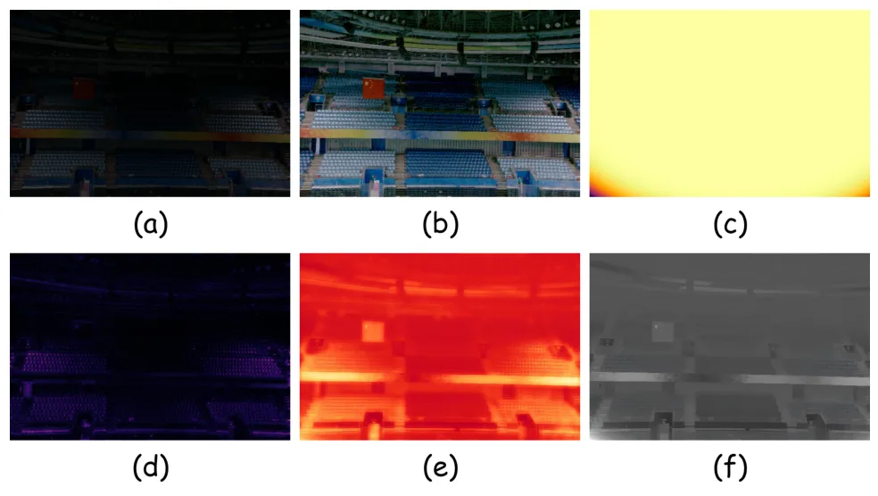
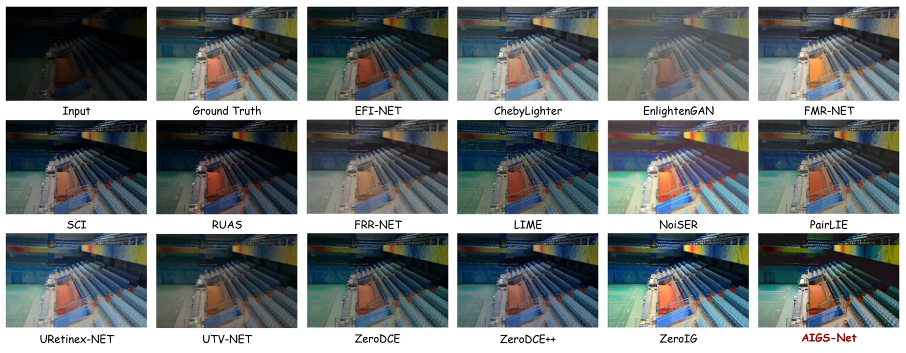
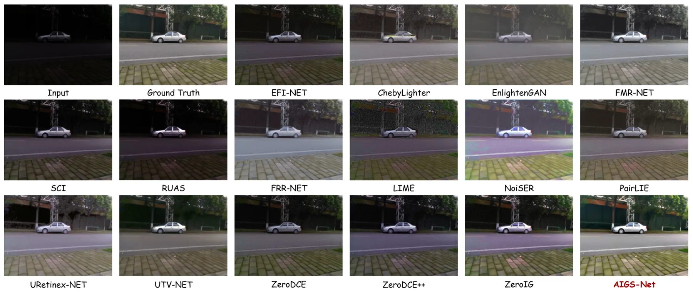

AIGS-Net：用 2D Gaussian Splatting 紧凑建模照明场的快速低光增强AIGS-Net: Compact Illumination Field Modeling via 2D Gaussian Splatting for Fast Low-Light Image Enhancement
主要是图像增强而非 3DGS 几何、VO 或 SLAM；可作为夜间视觉前端预处理线索，但摘要没有给出对定位/建图指标的直接验证。
一句话工作总结
AIGS-Net 用输入自适应 2D Gaussian basis 表示照明补偿场，以极少参数完成快速低光增强。
摘要
现有低光图像增强方法常在照明场表示能力和计算复杂度之间受限。AIGS-Net 提出一个超轻量低光增强架构，用输入自适应 2D Gaussian Splatting 构建照明场。与静态先验不同，Gaussian basis 的 opacity 由输入图像相对亮度统计动态调制，并通过有序 alpha compositing 渲染空间变化的照明补偿。为高效引导自适应照明补偿，方法引入零参数非线性多尺度上下文编码模块，从低频结构和局部对比中提取线索；同时集成噪声 mask 估计、锁定单通道 Gamma 映射、跨通道一致性正则和目标颜色对齐约束，以抑制噪声放大和传感器色偏。LOL 与 LSRW 实验显示，该方法约 40 个可学习参数即可兼顾细节恢复、色彩保真和推理效率。
Existing low-light image enhancement methods often face a bottleneck between the representation capacity of illumination-field modeling and computational complexity. To address this issue, this paper proposes an Adaptive Illumination Gaussian Splatting Network (AIGS-Net), an ultra-lightweight architecture for fast low-light enhancement. Unlike conventional static priors, AIGS-Net constructs an input-adaptive 2D Gaussian Splatting illumination field. The opacity of Gaussian basis functions is dynamically modulated by relative luminance statistics of the input image, and spatially varying illumination compensation is rendered through ordered alpha compositing. To guide adaptive illumination compensation efficiently, a zero-parameter nonlinear multiscale contextual encoding module is introduced to extract low-frequency structures and local contrast cues without additional convolutional weights. To suppress noise amplification and sensor-induced color bias, AIGS-Net integrates noise-mask estimation, locked single-channel Gamma mapping, cross-channel consistency regularization, and target color-alignment constraints. Experiments on LOL and LSRW benchmarks show that AIGS-Net improves detail recovery and color fidelity while requiring only approximately 40 learnable parameters, achieving an effective trade-off between enhancement quality and extreme inference efficiency.
中文解读摘录
- 链接：abs / PDF；作者：Yuhan Chen, Kunyang Huang, Fuchen Li, Zhuohan Qin, Guofa Li, Wenbo Chu, Keqiang Li；类别：cs.CV；采集 score=10。
- 核心思路：用输入自适应 2D Gaussian Splatting 表达照明场，做极轻量低光图像增强，据称约 40 个可学习参数。
- 方法要点：Gaussian basis opacity 由相对亮度统计动态调制，经有序 alpha compositing 渲染空间变化照明补偿；再配合无参数多尺度上下文编码、噪声 mask、Gamma 映射和色彩一致性约束。
- 关注点：与夜间视觉前端图像增强有间接关系，但不是三维 3DGS、VO 或 SLAM。若关注低照度 SLAM，可只看它是否改善特征/匹配稳定性，而不要把它归入 3D 重建主线。
图表/页面预览

{kind=link}

{kind=link}

{kind=link}
